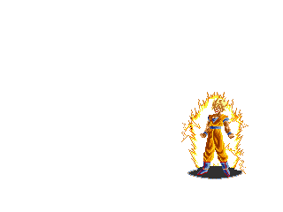
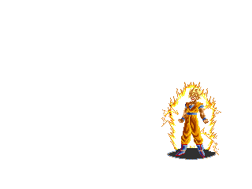
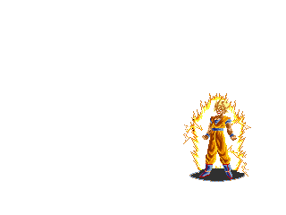

Juan Pablo Dominguez Barajas
Un poco sobre mi
Tengo 16
Voy en 3° semestre de preparatoria
Me gutan los Video-Juegos
Mi cumpleaños fue el 20 de junio pero aun se aceptan regalos :DS
¿Que espero de dev.f?
Poder aprender a programar
Crear mi propia pagina
Que alomejor el otro bach sea gratis

 
